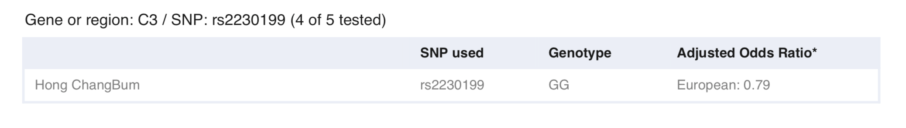

질병 연관성 분석¶
A primary application of personal genomics is towards understanding and evaluating the genetic components of personal traits, including risk for various diseases.
One of the most predominant means for uncovering the relationship between genetics and traits is through genetic association studies, which seek to identify statistical associations between genetic variables and specific human phenotypic traits.
Note
- 이번 장을 끝마치면 당신은 아래의 3가지에 대해서 배울 수 있다.
- 유전체 연관 분석 연구 방법
- 오즈비를 이용한 유전적 위험도 계산
- 여러 마커를 이용한 위험도 계산
오즈비¶
질병 관련 유전자 발굴을 위해서는 연관성 연구를 통해서 진행된다. 정상인과 질환자의 두 집단간의 특정 변이형의 발생 빈도를 비교하여 통계적으로 차이가 존재하면 특정 변이형과 질병사이에는 유의적으로 연관되어 있음을 의미하게 된다.
두 집단간의 유의성 검정은 chi-squared(X 2) test를 사용하며 특정 유전형에 대한 질병의 상대적 위험도는 오즈비(OR: odds ratio)로 표현한다.
약 100명의 환자와 정상인 데이터에서 유전형을 조사한 결과가 다음과 같다고 하면,
| Genotype | AA | AB | BB |
|---|---|---|---|
| 환자(cases) | 15 | 55 | 30 |
| 정상(controls) | 30 | 50 | 20 |
환자와 정상인 그룹별 관측된 유전자형(allele)과 유전형(genotype)은 다음과 같이 계산된다.
- 환자군에서의 AA 지노타입의 빈도 = 15/100 = 0.15
- 환자군에서의 AB 지노타입의 빈도 = 55/100 = 0.55
- 환자군에서의 BB 지노타입의 빈도 = 30/100 = 0.3
- 환자군에서의 유전자형 A의 빈도 = (2x15+55)/(2x100) = 0.425
- 환자군에서의 유전자형 B의 빈도 = (55+2x30)/(2x100) = 0.575
따라서 관측된 유전자형(allele)은 유전자형A, B 각각 0.425, 0.575이므로 총 allele는 샘플당 2개 이므로 다음과 같다.
| allele | A | B |
|---|---|---|
| 환자(cases) | 85 | 115 |
| 정상(controls) | 110 | 90 |
위에서 얻어진 case-control에 대해 상대적 위험도(OR)를 계산하면 다음과 같다.
| allele | B | A |
|---|---|---|
| 환자(cases) | 115 | 85 |
| 정상(controls) | 90 | 110 |
OR=(115x110)/(85x90) = 1.65
즉, 유전자형 B를 가진 사람이 유전자형 A를 가진 사람보다 1.65배 더 빈번히 질병이 발생함을 의미한다.
노인성황반변성¶
rs2230199의 C allele는 노화에 따라 황반 기능이 저하되어 시력이 떨어지거나 상실되는 질병인 노인성황반변성(age related macular degeneration)와 연관되어 있다고 알려져 있다. 유럽인에서 1.53의 오즈비를 가지고 있다.
각 지노타입에 따른 오즈비는 다음과 같다.
- CC = 1.53 2 = 2.34
- CG = 1.53
- GG = 1.0
유럽인에서 C allele의 빈도는 19%, G allele의 빈도는 81%로 나타나며 우리는 각 지노타입별 인구집단내에서 빈도를 다음과 같이 계산할 수 있다.
- P(CC) = p 2 = 0.192 = 0.23
- P(CG) = 2pq = 2(0.19)(0.81) = 0.31
- P(GG) = q 2 = 0.81 2 = 0.65
인구집단에서의 평균 위험도(estimate the average population risk: R pop)를 계산해보도록 하자.
- R pop = P(CC) ⅹ2.34+P(CG) ⅹ1.53+P(GG) ⅹ1.0 = 0.23ⅹ2.34+0.31x1.53+0.65ⅹ1 = 1.21
지노타입에 대한 상대위험도(estimate the genotypic relative risk)를 계산해보도록 하자.
- RR(CC) = 2.34 / 1.21 = 1.93
- RR(CG) = 1.53 / 1.21 = 1.26
- RR(GG) = 1.0 / 1.21 = 0.83
노인성황반변성이 전체 인구집단에서 평생 동안(average lifetime risk) 6.5%가 발생한다고 하자.
- Overall risk = average lifetime risk x RR(CC) = 0.065 x 1.93 = 0.126
- Overall risk = average lifetime risk x RR(CG) = 0.065 x 1.26 = 0.082
- Overall risk = average lifetime risk x RR(GG) = 0.065 x 0.83 = 0.054
즉, 15.4% risk of developing age-related macular degneration으로 이를 문장으로 표현하면 당신이 rs2230119의 지노타입이 CC 이면서 유럽인인 경우에 “유럽인 100명중 6.5명이 노인성황반변성에 걸리며, 당신과 같은 유전형(CC)을 가진 유럽인 100명 중 평생에 걸쳐 12.6명이 노인성황반변성에 걸리게 됩니다.”라고 리포트 할 수 있다.
{kind=link}
{kind=link}